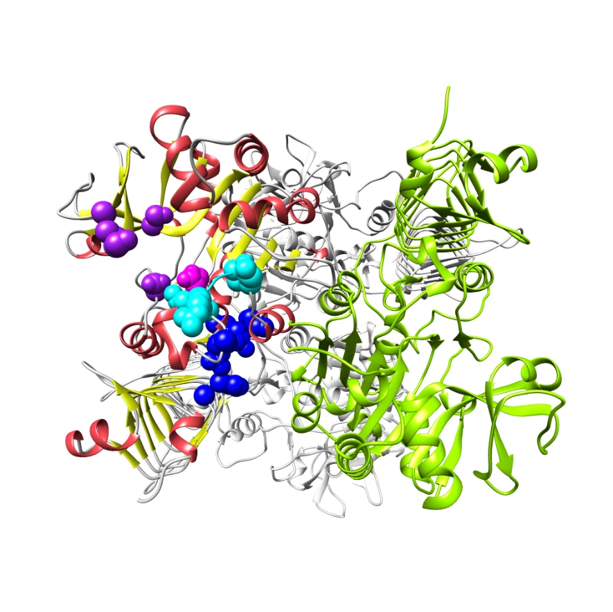
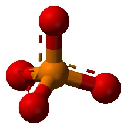
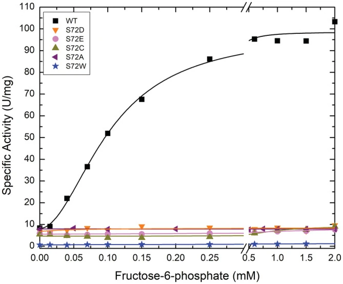
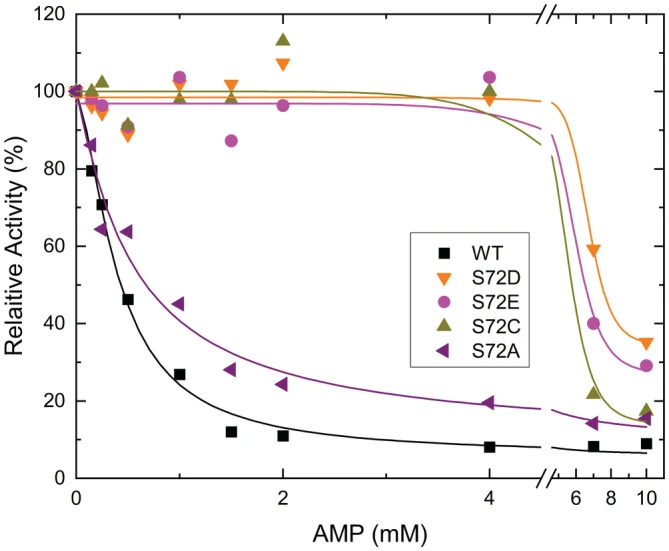
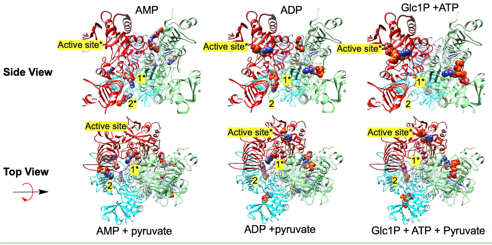
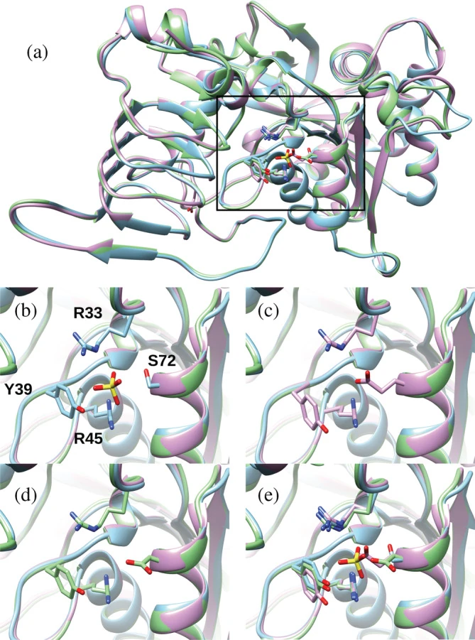

Context
ADP-glucose pyrophosphorylase (GlgC) catalyses ATP + glucose-1-phosphate → ADP-glucose + PPi, the committed step in bacterial glycogen and plant starch synthesis. Its activity is controlled by a promiscuous allosteric site.
I worked with Dr. Ballicora's enzymology lab for years, solving structures for five PhD candidates and mapping how activators, inhibitors, and substrates reshape the enzyme.
What I did
- Solved wild-type, mutant, and ligand-bound GlgC structures, including complexes with AMP, ADP, ATP, ADP-glucose, Fru6P, PEP, 3PPA, NPMG, R5P, and 3PGA.
- Mapped two functional AMP binding sites and their distinct specificities.
- Analyzed S72D/S72E, R75A/R75Q, and Y107A/N117A/D119A mutant structures with polder maps.
- Deposited structures including PDB 5W6J and 6V99, and supported the Protein Science paper.
Key results
- Structures solved
- 20+WT, mutants, and complexes
- PhD candidates supported
- 5Ballicora lab
- AMP binding sites
- 2Site 1 and Site 2
- PDB entries
- 25W6J and 6V99
- The allosteric site is promiscuous for activators and inhibitors, consistent with adaptation to different metabolic states.
- There are two AMP sites: Site 1 is promiscuous for AMP/ADP; Site 2 is specific for AMP.
- The ATP site selects ATP through the γ-phosphoryl group; ADP-glucose binding induces a conformational change consistent with a partial transition-state mimic.
- S72D and S72E knock out Regulatory Site 1.
- Additional structures include GlgC_E4P, GlgC_M6P, GTP/UTP/ITP/CTP complexes, Sso GlmU, Rhodococcus GlgAc, MolDHase, and GolDHase.
Figures






Collaborators

Dr. Miguel A. Ballicora
Principal Investigator
Loyola University Chicago
Dr. Mashael Alghamdi
GlgC enzymology
Loyola University Chicago
Dr. Rania Hussien
GlgC enzymology
Loyola University Chicago
Yuanpu Niu
GlgC structural biology
Loyola University Chicago

Dr. Boguslaw Nocek
Crystallography collaborator
Loyola University Chicago
Output
Source and disclosure. Adapted from Dr. Zheng's April 2024 research summary. Includes published structures and additional complexes from the Ballicora collaboration.